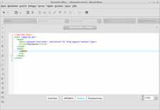

BlueGriffon
Dieser Artikel wurde für die folgenden Ubuntu-Versionen getestet:
Ubuntu 16.04 Xenial Xerus
Ubuntu 14.04 Trusty Tahr
Zum Verständnis dieses Artikels sind folgende Seiten hilfreich:
Der HTML-Editor BlueGriffon  blickt auf eine lange Geschichte zurück: als Nachfolger des Mozilla Composer geplant, zwischenzeitlich durch Nvu obsolet geworden, der wiederum durch KompoZer abgelöst wurde, ist im Mai 2011 die Version 1.0 veröffentlicht worden. Mit der Version 2.0 wurde das Lizenzmodell geändert: während ältere Versionen über den freiwilligen Kauf von Erweiterungen finanziert wurden, wird mittlerweile zwischen einer kostenlosen Basisversion und kommerziellen Versionen unterschieden (siehe auch What's Inside ).
blickt auf eine lange Geschichte zurück: als Nachfolger des Mozilla Composer geplant, zwischenzeitlich durch Nvu obsolet geworden, der wiederum durch KompoZer abgelöst wurde, ist im Mai 2011 die Version 1.0 veröffentlicht worden. Mit der Version 2.0 wurde das Lizenzmodell geändert: während ältere Versionen über den freiwilligen Kauf von Erweiterungen finanziert wurden, wird mittlerweile zwischen einer kostenlosen Basisversion und kommerziellen Versionen unterschieden (siehe auch What's Inside ).
Das Programm bietet wie KompoZer ein schnelles Umschalten zwischen Code- und Webansicht, was gerade von Einsteigern sehr geschätzt wird. Die integrierte Vorschau basiert auf Gecko, der Rendering-Engine, die in Firefox zum Einsatz kommt. Auf Wunsch kann zusätzlich ein externer Webbrowser eingebunden werden.
BlueGriffon kann neben Linux auch unter Windows und Mac OS X genutzt werden. Unterstützt werden die Standards HTML 4.01, XHTML und HTML5. Eher an Fortgeschrittene richten sich die folgenden Funktionen:
DOM-Explorer
JavaScript-Konsole
Unterstützung für CSS Level 3 und WAI-ARIA
Editor zum Erstellen von SVG-Grafiken
Installation¶
 Das Programm ist nicht in den offiziellen Paketquellen enthalten. Man muss daher auf Fremdpakete ausweichen.
Das Programm ist nicht in den offiziellen Paketquellen enthalten. Man muss daher auf Fremdpakete ausweichen.
Fremdpakete¶
Hinweis!
Fremdpakete können das System gefährden.
Ubuntu 16.04¶
Über die Projektseite werden DEB-Pakete  angeboten, die nach dem Herunterladen noch manuell installiert werden müssen [1].
angeboten, die nach dem Herunterladen noch manuell installiert werden müssen [1].
Ubuntu 14.04¶
GetDeb stellt Fremdpakete der älteren Version 1.7.2 bereit: bluegriffon .
Verwendung¶
Gestartet wird die Anwendung bei Ubuntu-Varianten mit einem Anwendungsmenü über "Entwicklung -> BlueGriffon" [2]. Unter Unity gibt man den Programmnamen ein.
Wer kein HTML beherrscht, wird mit einem HTML-Editor nichts anfangen können. Der Artikel Webentwicklung hilft dann weiter, die Zusammenhänge zu verstehen. Wer dagegen zumindest Grundkenntnisse besitzt, wird die zahlreichen gebotenen Möglichkeiten auch ohne langwierige Beschreibung nutzen können. Aus diesem Grund fällt dieser Abschnitt sehr kurz aus.

Definitiv praktisch ist die integrierte Vorschau bzw. der schnelle Wechsel zwischen dem Quellcode und dem Ergebnis für den späteren Betrachter. So können an HTML und CSS ernsthaft Interessierte ausprobieren, wie sich bestimmte Konstrukte optisch auswirken. Allerdings sollte man nicht vergessen, das Ergebnis immer auch mit anderen Browsern zu überprüfen. Obwohl Webseiten mit dem Vermerk "optimiert für..." glücklicherweise fast ausgestorben sind, gibt es in der Praxis hin und wieder doch kleinere Unterschiede, was die Unterstützung von HTML und CSS in den verschiedenen Webbrowsern angeht.
Zuletzt benutzte Dateien werden beim Programmstart automatisch wiederhergestellt (lässt sich in der Konfiguration abschalten). Nützlich ist auch "Datei -> Neu Assistent", der in wenigen Schritten eine valide HTML-Basisdatei erstellt. Eine Druckfunktion ist vorhanden. Der früher übliche Umweg über das Öffnen des Entwurfs in einem externen Browser entfällt damit.
Wer die Schriftgröße im Quelltextfenster ändern möchte, findet dazu rechts unten zwei kleine Schaltflächen (vor der Prozentangabe; siehe Abbildung).

Konfiguration¶
Die Programmeinstellungen sind unter "Extras -> Einstellungen" zu finden und in verschiedene Reiter (Tabs) gegliedert. Wer Programme hasst, die "nach Hause telefonieren", schaltet die integrierte automatische Update-Prüfung ab. Die Konfiguration wird im versteckten Ordner ~/.disruptive innovations sarl im Homeverzeichnis gespeichert.
Problembehebung¶
Kubuntu¶
Ein unter Kubuntu 14.04 aufgetretenes Problem mit der Version 1.7.2 sind Abstürze bei Verwendung des Oxygen-Designs. Ein Wechsel auf ein anderes GTK-Thema behebt das Problem.
Links¶
User's Manual
- kommerzielle Dokumentation
Free Unofficial Companion to BlueGriffon
- Einsatz von HTML, CSS, JavaScript, SVG und MathMLWebeditoren
 Programmübersicht
ProgrammübersichtWebentwicklung
Übersichtsartikel
- Erstellt mit Inyoka
-
 2004 – 2017 ubuntuusers.de • Einige Rechte vorbehalten
2004 – 2017 ubuntuusers.de • Einige Rechte vorbehalten
Lizenz • Kontakt • Datenschutz • Impressum • Serverstatus -
Serverhousing gespendet von